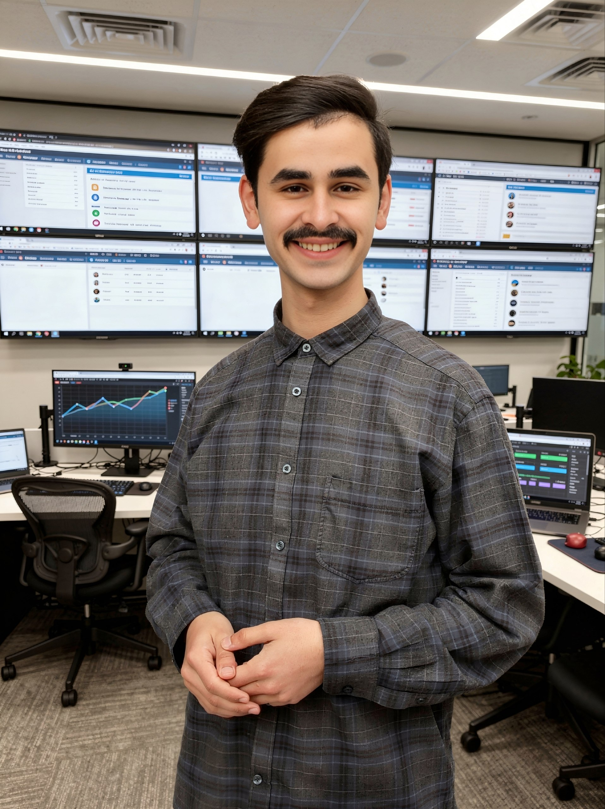
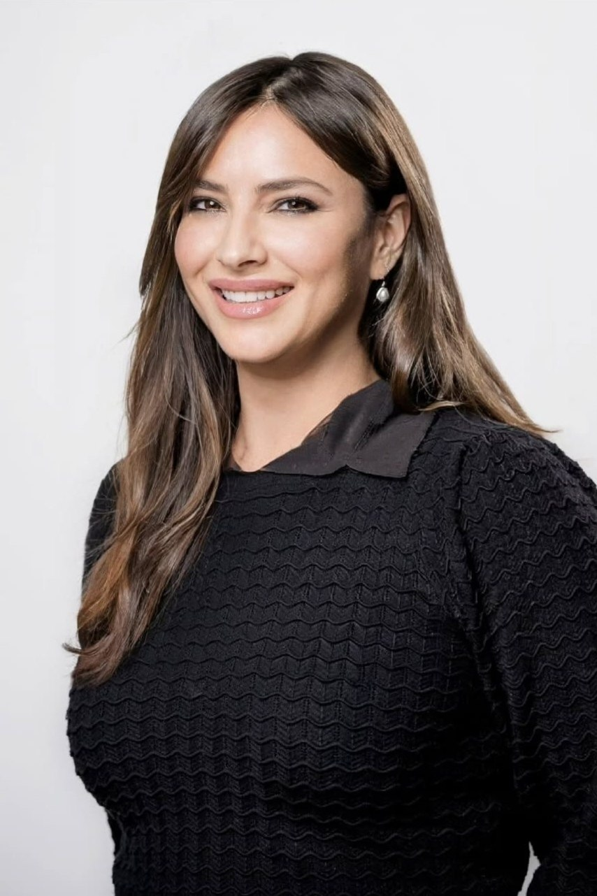

Two co-founders whose distinct strengths — elite cybersecurity expertise and strategic business administration — form the foundation of CyberPlus GmbH.
Zwei Mitgründer, deren unterschiedliche Stärken — Elite-Cybersicherheits-Expertise und strategische Geschäftsverwaltung — das Fundament der CyberPlus GmbH bilden.

Eng. Zaid Almaiah is the cybersecurity authority behind CyberPlus GmbH. He leads every dimension of the firm's technical operations — from offensive security engagements and red team campaigns to threat intelligence, security architecture, and incident response. His expertise is the engine that powers CyberPlus's reputation for uncompromising digital defense.
Eng. Zaid Almaiah ist die Cybersicherheits-Autorität hinter CyberPlus GmbH. Er leitet alle technischen Operationen — von offensiven Sicherheits-Engagements und Red-Team-Kampagnen bis zu Threat Intelligence, Sicherheitsarchitektur und Incident Response. Seine Expertise treibt den Ruf von CyberPlus für kompromisslose digitale Verteidigung an.
His career has been defined by a relentless commitment to understanding adversary methodologies — not merely to defend against them, but to anticipate and neutralize them. Under his leadership, CyberPlus has developed proprietary assessment frameworks delivering security insights that generic tooling cannot achieve.
Seine Karriere ist geprägt von einem unermüdlichen Engagement für das Verständnis gegnerischer Methoden — nicht nur zur Verteidigung, sondern zur Antizipation und Neutralisierung. Unter seiner Führung hat CyberPlus proprietäre Bewertungsrahmen entwickelt, die Sicherheitseinblicke liefern, die generische Tools nicht erreichen.
Eng. Zaid's technical acumen spans the full offensive security spectrum — web application and mobile penetration testing, complex red team operations, and real-world adversary simulation. His conviction: true security is proactive, measurable, and relentless.
Eng. Zaids technisches Know-how umfasst das gesamte offensive Sicherheitsspektrum — Web- und Mobile-Penetrationstests, komplexe Red-Team-Operationen und realistische Angreifer-Simulation. Seine Überzeugung: echte Sicherheit ist proaktiv, messbar und unerbittlich.
"In cybersecurity, the margin between safety and compromise is measured in preparation. At CyberPlus, we don't wait for the storm — we build the fortress before the clouds gather."
„In der Cybersicherheit wird die Grenze zwischen Sicherheit und Kompromittierung an der Vorbereitung gemessen. Bei CyberPlus warten wir nicht auf den Sturm — wir bauen die Festung, bevor sich die Wolken sammeln."
— Eng. Zaid Almaiah, CEO, CyberPlus GmbHMrs. Mia Memedi is the administrative backbone and digital growth architect of CyberPlus GmbH. While Eng. Zaid leads the firm's cybersecurity operations, Mrs. Mia is the force that ensures the entire business runs with Swiss-level precision — overseeing corporate administration, day-to-day operations, and the firm's search engine optimization strategy.
Mrs. Mia Memedii ist das administrative Rückgrat und die digitale Wachstumsarchitektin der CyberPlus GmbH. Während Eng. Zaid die Cybersicherheits-Operationen leitet, sorgt Mrs. Mia dafür, dass das gesamte Unternehmen mit Schweizer Präzision läuft — und überwacht die Geschäftsverwaltung, den täglichen Betrieb und die SEO-Strategie des Unternehmens.
Her leadership spans the full breadth of non-technical business functions: financial administration, legal and regulatory compliance, human resources, vendor management, and corporate communications. Mia has built the organizational infrastructure from the ground up — creating systems and workflows that allow CyberPlus's technical experts to focus entirely on protecting clients.
Ihre Führung umfasst das gesamte Spektrum nicht-technischer Geschäftsfunktionen: Finanzverwaltung, rechtliche und regulatorische Compliance, Personalwesen, Lieferantenmanagement und Unternehmenskommunikation. Mrs. Mia hat die organisatorische Infrastruktur von Grund auf aufgebaut.
On the digital front, Memedi drives CyberPlus's SEO strategy and online brand visibility — managing content strategy, keyword positioning, and digital marketing initiatives. Her ability to bridge a highly technical brand with a discoverable, authoritative online presence has been instrumental in the firm's market growth.
Auf der digitalen Seite treibt Mrs. Mia die SEO-Strategie und Online-Markensichtbarkeit von CyberPlus voran — mit Content-Strategie, Keyword-Positionierung und digitalen Marketing-Initiativen. Ihre Fähigkeit, eine hochtechnische Marke mit einer auffindbaren, autoritativen Online-Präsenz zu verbinden, war entscheidend für das Marktwachstum.
"A world-class cybersecurity firm needs more than technical brilliance — it needs operational discipline, a discoverable brand, and an organization that runs as precisely as the defenses it builds."
„Ein erstklassiges Cybersicherheitsunternehmen braucht mehr als technische Brillanz — es braucht operative Disziplin, eine auffindbare Marke und eine Organisation, die so präzise läuft wie die Verteidigung, die sie aufbaut."
— Mrs. Mia Memedi, CEO, CyberPlus GmbH